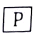

침투비파괴검사기사 (2018-09-15 기출문제)
1과목: 비파괴검사 개론
1. 비파괴검사의 결과를 전기 신호로 나타낼 수 없는 검사법은?
- 초음파탐상검사
- 누설자속탐상검사
- 와전류탐상검사
- 액체침투탐상검사
(정답률: 91%)

2. 침투탐상시험의 하전입자법(Electrfied Particle Test)에 관한 내용으로 틀린 것은?
- 정전기 효과(Static Electricity)
- 마찰전기효과(Triboelectric Effect)
- 분말은 대전량이 적은 것일수록 양호
- 양전기로 하전된 CaCO3 분말을 자분으로 사용
(정답률: 66%)
3. 와류탐상검사를 적용할 때 다음 중 시험코일의 감도가 가장 높은 것은?
- 외경 0.4cm 구리 전선과 내경 1cm 코일
- 외경 1cm 구리 봉과 내경 2cm 코일
- 외경 2cm 알루미늄 봉과 내경 3cm 코일
- 내경 4cm 구리 관과 외경 3cm 코일
(정답률: 64%)
4. 방사선과 시험체가 상호작용을 일으킬 때 그 정도에 영향을 미치는 인자가 아닌 것은?
- 시험체의 두께
- 방사선의 에너지
- 시험체의 원자번호
- 시험체의 표피효과
(정답률: 63%)
5. 비파괴검사의 신뢰도를 높이는 요인이 아닌 것은?
- 기술자의 기량
- 검사기법의 적응성
- 결과의 평가기준
- 단일검사수법
(정답률: 65%)
6. 해드필드(Hadfield) 강에 대한 설명으로 옳지 않은 것은?
- 수인처리를 한다.
- 열전도성이 나쁘다.
- 가공경화성이 크다.
- 열변형을 일으키지 않는다.
(정답률: 49%)
7. 쾌삭강에서 피삭성을 향상시키기 위해 첨가 하는 것이 아닌 것은?
- Mn
- Pb
- S
- Se
(정답률: 33%)
8. Al-Si 합금인 실루민의 설명으로 옳지 않은 것은?
- 금속나트륨 등으로 개량처리를 한다.
- Al과 Si의 합금은 공정반응을 갖춘다.
- 유동성이 좋기 때문에 얇고 복잡한 주물에 이용된다.
- 다이캐스팅 할 때는 용탕이 서냉되어 조대한 조직이 형성된다.
(정답률: 65%)
9. 마그네슘(Mg) 및 그 합금의 특징을 설명한 것 중 옳은 것은?
- Mg의 비중은 약 2.7이다.
- 비강도(강도/중량)가 낮다.
- 고온에서 매우 안정적이다.
- 감쇠능이 주철보다 커서 소음방지 재료로 사용 가능하다.
(정답률: 66%)
10. 다음 중 강의 경화능을 알아보기 위한 시험법으로 가장 적절한 것은?
- 압축시험
- 조미니시험
- 크리프시험
- 설퍼프린트시험
(정답률: 60%)
11. 분말야금법을 이용한 제조법의 특징을 설명한 것 중 옳은 것은?
- 용융점이 높은 재료의 경우에도 용융하지 않고 제품을 제조할 수 있다.
- 제품의 크기에는 제한이 없고, 제품형상의 제한이 크다.
- 후가공으로 절삭가공이 필수적이다.
- 제품 내 가공이 존재한다.
(정답률: 58%)
12. 황동의 조직에 관한 설명 중 틀린 것은?
- 황동은 6개의 상을 가지고 있다.
- β상은 조밀육방격자를 갖는다.
- α상은 면심입방격자를 갖는다.
- α상은 구리에 아연을 고용한 상이다.
(정답률: 47%)
13. 냉간가공(cold working)에 대한 설명으로 옳은 것은?
- 전위밀도가 감소하여 강도가 약해진다.
- 냉간가공은 재결정온도 이상에서 가공한 것을 말한다.
- 냉간가공으로 생긴 잔류응력이 재료 내에 압축응력으로 작용하여 피로강도가 나빠진다.
- 항복점연신을 나타내는 강을 항복점 이상으로 냉간가공하게 되면 항복점연신이 없어진다.
(정답률: 48%)
14. 저온 풀림 경화시킨 스프링강재가 사용 중 시간의 경과에 따라 경도 등의 물성이 악화되는 현사상은?
- 가공변화
- 경년변화
- 소성변화
- 자성변화
(정답률: 65%)
15. 다음 경도시험 중 대면각이 136°인 다이아몬드 사각추 압입자를 사용하는 것은?
- 누프 경도시험
- 브리넬 경도시험
- 비커스 경도시험
- 로크웰 경도시험
(정답률: 53%)
16. 용접 후 잔류응력을 제거하거나 완화시키는 방법이 아닌 것은?
- 피닝법
- 역변형법
- 노 내 풀림법
- 저온 응력 완화법
(정답률: 60%)
17. TIG 용접으로 판 두께 3mm의 알루미늄 판을 용접하려고 할 때 용접 전원으로 가장 적합한 것은?
- ACHF
- DCRP
- DCSP
- 전원이 필요 없음
(정답률: 57%)
18. 모재의 두께가 6mm인 강판을 가스용접 하려고 한다. 이 때 사용할 용접봉의 지름으로 가장 적당한 것은?
- 1mm
- 2mm
- 4mm
- 6mm
(정답률: 49%)
19. 다음 중 금속원자가 상온에서 원자 간의 인력에 의해 접합할 수 있는 거리로 옳은 것은?
- 10-7cm
- 10-8cm
- 10-9cm
- 10-10cm
(정답률: 71%)
20. 용접의 시작이나 끝부분에 생기는 결함을 방지하기 위해 용접이음 부분에 붙여 용접하고 나중에 제거하는 것은?
- 엔드 탭
- 크레이터
- 비드 종단
- 스카핑
(정답률: 74%)
2과목: 침투탐상검사 원리
21. 침투탐상검사에서 무현상법에 대한 설명으로 틀린 것은?
- 현상과정에서 현상제를 적용하지 않고 관찰하는 방법이다.
- 현상제를 적용하는 검사방법에 비해 검사감도가 낮다.
- 시험체에 열을 가해 침투제가 시험면 밖으로 나오게 하여 관찰하는 방법이다.
- 일반적으로 염색침투탐상검사에 널리 적용되는 방법이다.
(정답률: 61%)
22. 다음 중 침투시간을 결정할 때, 고려해야 할 사항으로 틀린 것은?
- 예상 결함의 종류와 크기
- 사용하는 유화제의 종류 및 시간
- 시험체와 침투액의 온도
- 시험체의 재질
(정답률: 51%)
23. 형광침투액에는 형광물질이 첨가되어 있어서, 이것에 여기 광으로 파장이 320~400nm의 자외선을 조사하면 황록색의 형광을 발하는데 이 때 발생되는 형광의 파장은?
- 200~250mm 범위
- 300~350mm 범위
- 400~450mm 범위
- 500~550mm 범위
(정답률: 51%)
24. 다음 중 에어로졸 현상제 제품을 사용할 때 주의사항으로 틀린 것은?
- 사용 전에 에어로졸 용기를 충분히 흔들어 교반한다.
- 시험 면과 에어오졸 용기의 거리는 50cm 이상으로 한다.
- 시험 면과 분무 축과의 각도는 45°~90°를 유지하고 분무한다.
- 도막두께는 염색침투검사와 형광침투검사에서 다르게 적용한다.
(정답률: 53%)
25. 속건식 현상제에 사용되는 백색 분말의 재료로 사용되지 않는 것은?
- 산화마그네슘
- 산화칼슘
- 산화티타늄
- 산화알루니늄
(정답률: 53%)
26. 형광침투탐상검사 시 시험면의 자외선 강도와 염색침투탐상검사의 시험면의 밝기에 대한 일반적인 최소기준은?
- 300μW/cm2
- 500μW/cm2
- 800μW/cm2
- 1200μW/cm2
(정답률: 77%)
27. 침투탐상검사에서 사용되는 현상제 종류 중에서 결함검출 감도가 가장 우수한 것은?
- 건식 현상
- 수용성 현상제
- 속건식 현상제
- 플라스틱 필름 현상제
(정답률: 55%)
28. 침투탐상검사의 적용과 검사결과의 신뢰성에 대한 설명으로 알맞은 것은?
- 표면 전처리가 매우 중요하며 재료의 종류에 관계없이 기계가공을 할 경우에 효과적이다.
- 원형의 결함은 지시모양이 불명료하게 나타나거나 검출하기 곤란하다.
- 다공성 및 흡수성 재료라면 재료에 관계없이 탐상할 수 있다.
- 표면조건에 영향을 많이 받기 때문에 표면이 거친 시험체는 평가가 곤란하다.
(정답률: 60%)
29. 침투탐상검사에 사용되는 검사 재료 중 낮은 기화합 및 비휘발성이 가장 필요한 재료는?
- 침투제
- 유화제
- 현상제
- 세척제
(정답률: 66%)
30. 형광침투탐상검사에서 자외선등을 조사했을 경우 지시는 어떻게 나타나는가?
- 흑색의 바탕색에 대해 강한 흰색의 빛으로 나타난다.
- 적색의 바탕색에 대해 강한 청색의 빛으로 나타난다.
- 녹색의 바탕색에 대해 강한 흰색의 빛으로 나타난다.
- 자외선 배경에 대해 강한 황록색의 빛으로 나타난다.
(정답률: 79%)
31. 침투탐상검사의 침투액은 정기적으로 그 성능을 입증해야 한다. 시험항목에 해당되지 않는 것은?
- 감도시험
- 수분 함유량시험
- 점성시험
- 접촉각시험32.
(정답률: 66%)
32. 침투탐상검사에서 전처리 시 주의해야 할 사항이 아닌 것은?
- 화학적 방법을 사용 시는 시험체의 반응성에 주의한다.
- 연마나 블라스팅(blasting) 등은 연질의 재질에 사용할 수 없다.
- 기계 가공된 연질의 시험체는 부식 등의 원인 때문에 화학 에칭(etching) 등을 사용할 수 없다.
- 산세척으로 인해 수소취성이 가능성이 있을 경우에는 수소를 제거하기 위해 적당한 온도로 가열해야 한다.
(정답률: 48%)
33. 알루미늄 합금의 A형 대비시험편을 재사용하거나 보관할 때의 세척처리 방법으로 틀린 것은?
- 유기 용제에 의한 증기세척
- 유기 용제에 의한 침적법
- 유기 용제를 이용한 초음파세척
- 유기 용제에 의한 산세척
(정답률: 62%)
34. 평가대상이 아닌 지시모양의 발생원인이 아닌 것은?
- 불충분한 전처리
- 과도한 유화시간
- 불충분한 세척철
- 구조가 복잡하여 세척이 곤란한 곳
(정답률: 65%)
35. 고강도 강에 화학적인 에칭(etching)으로 전처리를 수행해야 하는 경우 시험체를 적절한 시간동안 적당한 온도로 가열하는 이유로 가장 옳은 것은?
- 피클링(Pickling)을 하기 위해
- 수소취성을 피하기 위해
- 알카리세척을 하기 위해
- 할로겐 화합물과의 반응을 줄이기 위해
(정답률: 69%)
36. 후유화제법에서 사용하는 기름 베이스유화제에 대한 설명으로 틀린 것은?
- 기름에 계면활성제를 용해하여 사용하는 것이다.
- 주로 담금법으로 적용한다.
- 후유화제법에 적용하기 때문에 수세성 침투탐상검사보다 결함검출감도가 높다.
- 일반적으로 5% 정도의 농도로 분사하여 적용한다.
(정답률: 50%)
37. 침투탐상검사를 위해 검사체의 표면을 모래분사(Sand blasing)로 전처리하였을 때 이에 따라 예상되는 부작용으로 가장 관계가 큰 것은?
- 결함의 입구가 막힌다.
- 기름 찌꺼기가 결함을 밀봉한다.
- 결함이 빠르게 성장된다.
- 모래 분사에 의해 새로운 결함이 발생된다.
(정답률: 68%)
38. 형광침투검사방법과 비교하였을 때 염색 침투검사방법이 가지는 장점은?
- 결함검출 감도가 좋다.
- 검사비용이 많이 든다.
- 미세한 결함 탐상에 유리하다.
- 비교적 적은 설비 및 시설이 요구된다.
(정답률: 80%)
39. 염색 침투탐상검사의 탐상원리에 대한 설명으로 틀린 것은?
- 작은 불연속일 경우에는 침투시간이 길어진다.
- 지시는 자외선등에 조사되었을 때 빛을 발산한다.
- 침투제가 불연속에서 씻겨나갈 경우에는 지시가 나타나지 않는다.
- 침투제는 지시를 나타내기 위해 불연속에 침투한다.
(정답률: 70%)
40. 겨울철 0℃ 이하의 야외에서 침투탐상검사를 수행할 때, 발생하는 문제점이 아닌 것은?
- 침투액의 점도 상승에 의한 침투시간 증가
- 현상제 용제의 휘발성 저하에 따른 현상제 건조시간 증가
- 침투액의 적심성 저하
- 침투액의 점도 저하에 의한 침투시간 감소
(정답률: 74%)
3과목: 침투탐상검사 시험
41. 침투탐상검사에 사용되는 검사 절차서를 개정해야 하는 요건 중 틀린 것은?
- 검사자가 변경된 경우
- 전 처리 기법이 변경된 경우
- 탐상제의 종류가 변경된 경우
- 탐상제의 처리 기법이 변경된 경우
(정답률: 70%)
42. 침투탐상시험에 사용하는 침투액에 함유된 유황(sulfur)이나 염소(Chlorine)는 다음 중 어느 시험체의 검사에 영향을 미치는가?
- 알루미늄 합금
- 니켈 합금
- 마그네슘 합금
- 연강
(정답률: 70%)
43. 침투탐상시험에서 결과의 기록방법으로 적당하지 않는 방법은?
- 사진에 의한 방법
- 전사에 의한 방법
- 도면(스케치)으로 표시하는 방법
- 시험편에 표시해두는 방법
(정답률: 78%)
44. 침투탐상검사 시 관찰방법에 대한 설명으로 틀린 것은?
- 염색침투액을 사용할 때에는 관찰면의 밝기는 최소한 500~1000Lx 이상이어야 한다.
- 형광침투액을 사용시는 20Lx 이하의 어두운 곳에서 실시하여야 한다.
- 자외선조사등 사용 시 조사등의 강도를 확인하기 위해서는 조도계를 사용하여 검사를 한다.
- 경함의 모양은 확대경으로 관찰하여 결함의 크기를 기록하여도 좋다.
(정답률: 45%)
45. 침투탐상용 A형 대비시험편의 특징 중 장점에 속하지 않는 것은?
- 시험편의 제작이 간단하다.
- 균열의 재현성이 뛰어나므로, 계속 반복해서 재사용하여도 검출감도에는 변화가 없다.
- 시험편 균열의 형상이 자연 균열에 가깝고, 재질적으로도 경금속 재료에 사용하는 탐상제 성능을 점검하는 대비시험편으로 적합하다.
- 비교적 미세한 균열을 얻을 수 있고, 시험편에는 다양한 깊이, 폭의 균열이 발생하기 때문에 균열의 폭, 깊이에 의한 성능의 차를 아는 것이 가능하다.
(정답률: 64%)
46. 침투탐상검사에 사용되는 자외선을 방출하는 자외선등에 부착된 필터가 차단해야 하는 빛의 종류는?
- 자연광선
- 침투제에 의한 형광
- 등에서 발산하는 가시광선
- 등에서 발산하는 320~400nm의 범위의 파장을 가진 광선
(정답률: 63%)
47. 침투탐상검사에서 복잡한 형상의 나사에 대한 검사 방법으로 가장 옳은 것은?
- 수세성 형관침투탐상검사 건식 현상법
- 수세성 염색침투탐상검사 건식 현상법
- 수세성 형관침투탐상검사 무현상법
- 후유성 형관침투탐상검사 건식 현상법
(정답률: 57%)
48. 휴유화성 침투탐상시험에서 침투처리 후 건식 현상제를 사용하는 경우 이용되는 현상은?
- X-선 감광
- 취화은의 석출
- 삼투현상
- 모세관현상
(정답률: 63%)
49. 제품별 검사 방법에 대한 설명으로 가장 적절하지 않은 것은?
- 볼트류는 가공 중에 균열이 발생되는 경우가 있어 건식 현상법에 의한 수세성 형광침투검사를 주로 한다.
- 단조품 중 훅크(hook)는 속건식현상법에 의한 용제 제거성 염색침투탐상검사를 주로 한다.
- 용접부의 침투탐상검사는 주로 속건식 현상법에 의한 염색침투탐상검사를 한다.
- 사용중인 터빈 브레이드에 발생하는 결함은 건식현상법에 의한 수세성 형광침투검사를 주로 한다.
(정답률: 57%)
50. 후유화 침투제 사용 시 유화제 적용방법 중 적당하지 않은 것은?
- 솔질(Brush)
- 담금(Dipping)
- 분사(Spraying)
- 침지(Immersion)
(정답률: 74%)
51. 침투탐상시험 시 건식 현상제 적용방법이 아닌 것은?
- 매몰법
- 흘림법
- 분무법
- 공기교반법
(정답률: 51%)
52. 침투탐상검사 시 사용되는 전처리방법 중 기계적 방법이 아닌 것은?
- 와이어 브러쉬법
- 초음파 세척법
- 브라스팅법
- 용제분무법
(정답률: 67%)
53. 침투탐상제를 이용한 누설검사의 특성이 아닌 것은?
- 누설위치확인이 용이하다.
- 가압, 감압장치 등 특별한 누설시험 장치가 필요없다.
- 완성품이 되기 전의 상태에서도 간단히 누설시험을 한다.
- 두꺼운 시험체에도 용이하다.
(정답률: 50%)
54. 침투탐상검사에서 과잉 침투제 제거에 관한 사항 중 틀린 것은?
- 형광 침투액 제거는 자외선 아래에서 확인하면서 실행한다.
- 용제 제거성 침투액 제거는 침지법이 좋다.
- 후유화성 침투액 제거는 유화시간이 지난 후 물로 세척한다.
- 수세 세척의 경우 물의 온도, 압력 등이 관리되어야 한다.
(정답률: 68%)
55. 침투탐상검사에서 주조품에 대하여 검사를 할 시 세척법으로 수세를 사용할 때의 설명으로 틀린 것은?
- 수압은 보통 275kPa를 초과하지 않도록 한다.
- 수온은 30℃ 전후의 물을 사용한다.
- 세척은 가급적 빨리 시험체 전면을 처리한다.
- 습식현상제를 사용하는 경우는 세척 후 건조처리를 해야 한다.
(정답률: 52%)
56. 알루미늄, 마그네슘, 스테인리스 강 용접품의 결함 종류가 아닌 것은?
- 균열(Crack)
- 기공(Porosity)
- 겹침(Laps)
- 융합불량(Lakc of fusion)
(정답률: 68%)
57. 침투탐상검사에 사용할 수 없는 침투액과 현상제의 조합은?
- 수세성 형광침투액, 습식현상제
- 용제제거성 염색침투액, 속건식현상제
- 후유화성 형광침투액, 건식현상제
- 수세성 염색침투액, 건식현상제
(정답률: 56%)
58. 침투제의 점성과 표면장력은 침투력에 많은 영향을 미치게 되는데 다음 중 20℃에서 점성 및 표면장력이 가장 작은 물질은?
- 나프타(Naphtha)
- 물(water)
- 에틸알콜(Ethanol)
- 케로신(Kerosene)
(정답률: 48%)
59. 수세성 침투액이 균열 내부에 남아있는 수분과 혼합되는 경우, 균열 내부에 수분이 없을 때보다 상대적으로 침투능력이 저하된다. 그 이유로 합당한 것은?
- 수분의 표면장력이 침투액의 표면장력보다 크므로 접촉각이 증가되기 때문에
- 수분의 표면장력이 침투액의 표면장력보다 크므로 접촉각이 감소되기 때문에
- 수분의 표면장력이 침투액의 표면장력보다 작으므로 접촉각이 증가되기 때문에
- 수분의 표면장력이 침투액의 표면장력보다 작으므로 접촉각이 감소되기 때문에
(정답률: 47%)
60. 스테인리스강, 티타늄 합금강에 대해 탐상을 하는 경우 탐상제에 함유된 어떤 성분이 부식이나 취성을 유발할 수 있는가?
- C
- Cl
- Ni
- Si
(정답률: 59%)
4과목: 침투탐상검사 규격
61. 침투탐상 시험방법 및 침투지시모양의 분류(KS B 0816)에 의한 유화제 적용 방법이 아닌 것은?
- 침지
- 붓기
- 분무
- 붓칠
(정답률: 64%)
62. 보일러 및 압력용기에 대한 침투탐상검사(ASME Sec.V)에 따른 침투탐상시험에서 최종 판독의 시행시기로 적절한 것은?
- 건식 현상제를 적용한 직후
- 건식 현상제를 적용한 후 10분 이내
- 습식 현상제의 도막이 건조된 후 10~60분 사이
- 습식 현상제의 도막이 건조된 후 1시간 뒤
(정답률: 71%)
63. 보일러 및 압력용기에 대한 침투탐상검사(ASME Sec.V, Art.6)에 따라 침투탐상검사를 하고자 할 때 표준적인 시험체의 표면온도범위는?
- 100~150°F
- 90~145°F
- 60~135°F
- 40~125°F
(정답률: 61%)
64. 침투탐상 시험방법 및 침투지시모양의 분류(KS B 0816)에 의해 형광침투탐상시험을 할 때 적용 방법으로 옳은 것은?
- 관찰하기 전에는 5분 이상 어두운 곳에서 눈을 적응하여야 한다.
- 세척 처리할 때 수온의 특별한 규정이 없을 때는 15~50℃로 한다.
- 조작방법에 잘못이 있다고 판단될 때 재시험을 할 수 있다.
- 기름베이스 유화제를 사용하는 경우 유화시간은 원칙적으로 2분 이내로 한다.
(정답률: 54%)
65. 보일러 및 압력용기에 대한 침투탐상검사(ASME Sec.V, Art.6)에 규정된 검사 표면의 건조 방법이 아닌 것은?
- 산소-아세틸렌 가열
- 자연 건조
- 강제 냉풍
- 열풍
(정답률: 51%)
66. 침투탐상 시험방법 및 침투지시모양의 분류(KS B 0816)에 따른 형광침투탐상시험 관찰 시 암실의 밝기는?
- 5 lx 이하
- 10 lx 이상
- 20 lx 이하
- 50 lx 이상
(정답률: 83%)
67. 보일러 및 압력용기에 대한 침투탐상검사(ASME Sec.V, Art.6)에서 표준온도 범위에서 벗어난 온도 범위 즉 5℃에서 10℃까지의 범위에서 요구되는 최소 침투시간으로 옳은 것은?
- 기준 시간의 1배
- 기준 시간의 1.5배
- 기준 시간의 2배
- 기준 시간의 2.5배
(정답률: 50%)
68. 보일러 및 압력용기에 대한 침투탐상검사(ASME Sec.V, Art.6)에서 침투액 중 유황함량 측정을 필요로 하는 시험체의 재질은?
- 니켈 합금
- 티타늄 합금
- 알루미늄 합금
- 듀플렉스 스테인리스 강
(정답률: 67%)
69. 침투탐상 시험방법 및 침투지시모양의 분류(KS B 0816)에 따라 전수검사한 결과 합격한 시험체에 표시하는 것으로 올바른 것은?
- 각인이나 부식으로 P기호 표시
- P표시가 곤란한 경우는 황색으로 착색
- 착색으로 기호 표시

표시 곤란한 경우 보라색으로 착색
(정답률: 65%)
70. 침투탐상 시험방법 및 침투지시모양의 분류(KS B 0816)에 규정한 관찰 방법으로 틀린 것은?
- 침투지시모양의 관찰은 현상제 적용 후 7~60분 사이에 하는 것이 바람직하다.
- 형광침투액은 관찰하기 전에 1분 이상 어두운 곳에서 눈을 적응시킨다.
- 염색침투액의 사용시 시험면 밝기는 800μW/cm2 이상인 자연광 또는 백색광하에서의 관찰이 바람직하다.
- 침투지시모양이 나타났을 때 결함침투지시 모양인지 의사지시인지를 확인하여야 한다.
(정답률: 63%)
71. 침투탐상 시험방법 및 침투지시모양의 분류(KS B 0816)에서 구분하는 3종류의 독립결함이 아닌 것은?
- 분산 결함
- 갈라짐
- 선상 결함
- 원형상 결함
(정답률: 66%)
72. 보일러 및 압력용기에 대한 침투탐상검사(ASME Sec.V, Art.24 SE-165)에 따른 주조에서 발생된 표면 불연속이 아닌 것은?
- 기공
- 수축 균열
- 콜드셧(clos shut)
- 겹침(lap)
(정답률: 49%)
73. 보일러 및 압력용기에 대한 침투탐상검사(ASME Sec.V, Art.6)에 따른 시험기록의 작성시 규정된 기재 사항이 아닌 것은?
- 침투액, 유화제, 세척액 및 현상제의 명칭
- 시험 연월일
- 시험체의 품명
- 시험 결과의 합부 판정
(정답률: 53%)
74. 침투탐상 시험방법 및 침투지시모양의 분류(KS B 0816)의 대비시험편에 대한 사용방법 설명이 잘못된 것은?
- 탐상제의 성능 및 조작방법의 적합여부를 조사하는데 사용한다.
- A형 시험편은 원칙적으로 흠을 사이에 둔 양쪽 면을 1조로 하여 사용한다.
- B형 대비시험편은 원칙적으로 갈라짐에 대하여 수평방향으로 1/2 전달한 2편을 2개로 하여 사용한다.
- 탐상제의 성능시험은 1조의 대비시험편의 각 면에 비교할 탐상제를 각각 적용하여 동일조건의 시험으로 얻어진 지시모양을 비교한다.
(정답률: 64%)
75. 침투탐상 시험방법 및 침투지시모양의 분류(KS B 0816)에서 현상처리방법이 아닌 것은?
- 속건식 현상제를 적용하는 경우 분무, 붓기, 붓칠 및 침지한다.
- 습식 현상제인 경우는 시험체를 세척 처리 후 습식현상제 속에 침지하거나 붓기, 분무, 붓칠로 적용한다.
- 습시현상제를 적용시 잉여 현상제를 재빨리 배액한다.
- 습식 및 속건식 현상제를 적용하는 경우는 시험체의 표면이 현상제에 의해 적절한 백그라운드로 덮이는 정도로 한다.
(정답률: 44%)
76. 침투탐상 시험방법 및 침투지시모양의 분류(KS B 0816)에 대한 설명 중 틀린 것은?
- 표준온도 범위는 15~50℃이다.
- 주로 금속 재료에 적용한다.
- 세척제는 시험부위에 직접 분사하여 적용한다.
- 표면균열 검사에 효과적이다.
(정답률: 58%)
77. 보일러 및 압력용기에 대한 침투탐상검사(ASME Sec.V, Art.6)에 따른 잉여 침투액의 제거 방법에서 수세성 침투애일 때 수압은 얼마 이하이어야 하는가?
- 20 psi
- 30 psi
- 40 psi
- 50 psi
(정답률: 45%)
78. 압력용기 제작기준 규격 강제 부록(ASME Code Sev.Ⅶ)에서 규정한 침투탐상지시에 대한 설명으로 틀린 것은?
- 선형지시는 길이가 폭의 3배 보다 큰 것이다.
- 관련 선형지시는 불합격으로 한다.
- 1/8인치를 초과하는 원형지시는 불합격으로 한다.
- 동일 선상으로 1/16인치 분리된 4개 이상의 원형지시는 불합격으로 한다.
(정답률: 41%)
79. 침투탐상 시험방법 및 침투지시모양의 분류(KS B 0816)에 의해 모든 검사를 수행하고 난 후 시험보고서를 작성하고자 한다. 시험체의 정보에 대하여 기록할 내용으로 가장 거리가 먼 것은?
- 시험체의 재질
- 시험체의 표면사항
- 시험체의 무게
- 시험체의 모양ㆍ치수
(정답률: 72%)
80. 보일러 및 압력용기에 대한 침투탐상검사(ASME Sec.V, Art.6)에 따라 니켈 합금강을 검사할 때 침투제에 포함되는 함량이 제한되는 원소는?
- 붕소(B)
- 염소(Cl)
- 불소(F)
- 유황(S)
(정답률: 58%)